Chapter 15 Point Pattern Analysis IV
NOTE: The source files for this book are available with companion package {isdas}. The source files are in Rmarkdown format and packed as templates. These files allow you execute code within the notebook, so that you can work interactively with the notes.
In the last practice/session your learning objectives included:
- Learning about clustered and dispersed (or regular) patterns.
- Learning the concept of nearest neighbors.
- Learning about distance-based methods for point pattern analysis.
- Learning about the \(G\)-function for the analysis of event-to-event nearest neighbor distances.
15.1 Learning Objectives
In this chapter, you will:
- Learn about the \(F\)- or empty space function.
- Consider the issue of patterns at multiple scales.
- Learn about the \(K\)-function.
- Apply both of these techniques using a simple example.
15.2 Suggested Readings
- Bailey TC and Gatrell AC (1995) Interactive Spatial Data Analysis, Chapter 3. Longman: Essex.
- Baddeley A, Rubak E, Turner R (2016) Spatial Point Pattern: Methodology and Applications with R, Chapters 7 - 8. CRC: Boca Raton.
- Bivand RS, Pebesma E, Gomez-Rubio V (2008) Applied Spatial Data Analysis with R, Chapter 7. Springer: New York.
- Brunsdon C and Comber L (2015) An Introduction to R for Spatial Analysis and Mapping, Chapter 6, 6.1 - 6.6. Sage: Los Angeles.
- O’Sullivan D and Unwin D (2010) Geographic Information Analysis, 2nd Edition, Chapter 5. John Wiley & Sons: New Jersey.
15.3 Preliminaries
As usual, it is good practice to clear the working space to make sure that you do not have extraneous items there when you begin your work. The command in R to clear the workspace is rm (for “remove”), followed by a list of items to be removed. To clear the workspace from all objects, do the following:
rm(list = ls())Note that ls() lists all objects currently on the workspace.
Load the libraries you will use in this activity:
library(isdas)
library(spatstat)
library(tidyverse)Load the datasets that you will use for this practice:
data("pp1_df")
data("pp2_df")
data("pp3_df")
data("pp4_df")
data("pp5_df")These five dataframes include the coordinates of events set in the space of a unit square. To convert these dataframes into ppp objects we first define a window:
# We use "owin" to define a window of coordinates which is in the five dataframes.
W <- owin(c(0, 1), c(0, 1))And then use the function as.ppp to convert into ppp:
# `as.ppp()` is a function that we use to convert dataframes into ppp objects
pp1.ppp <- as.ppp(pp1_df, W = W)
pp2.ppp <- as.ppp(pp2_df, W = W)
pp3.ppp <- as.ppp(pp3_df, W = W)
pp4.ppp <- as.ppp(pp4_df, W = W)
pp5.ppp <- as.ppp(pp5_df, W = W)15.4 Motivation
Distance-based approaches like the \(\hat{G}\)-function provide a useful complement to density-based approached. They can be implemented in more ways than we have seen so far.
In this practice, you will learn about two more tools for conducting distance-based analysis, the \(\hat{F}\)-function and the \(\hat{K}\)-function.
15.5 F-function
The \(\hat{G}\)-function was defined as the cumulative distribution of the distances from events to their nearest neighboring event. The \(\hat{F}\)-function is based on the same premise, but instead of using event-to-event distances, it uses point-to-event distances.
Recall that a point is an arbitrary location on a map that is not necessarily the location of an event. It may well be (and typically is) empty space. For this reason, the \(\hat{F}\)-function is sometimes called the empty space function: when there is more empty space in a region, the distance from a point to the nearest neighboring event is typically longer.
More formally, this function is defined as follows, with \(d_{ik}\) as the distance from the point at \(i\) (not necessarily an event!) to its nearest neighboring event at location \(k\): \[ \hat{F}(x)=\frac{(d_{ik}\le x, \forall i)}{n} \]
Again, we use the hat notation to indicate that the function is estimated from the data.
The theoretical distribution of this function is known (based on a null landscape generated by a spatially random Poisson process: remember that a Poisson process is a type of random process that consists of points randomly located on a landscape). It is as follows: \[ F_{pois}(x) = 1 - exp(-\lambda \pi x^2). \]
Notice that the distribution is in fact identical to that for \(G\). This makes sense: if the distribution of events is spatially random, the distribution of empty space in the region must be random as well!
The interpretation of \(\hat{F}(x)\) is the opposite of \(\hat{G}(x)\): when the empirical \(\hat{F}(x)\) is greater than the theoretical function, this suggests that empty spaces are closer to events than expected, compared to the null landscape, as in a dispersed pattern. On the contrary, when the empirical function is less than the theoretical function, this would suggest a clustered pattern, since the events tend to be far away from the points used to calculate the function.
The \(\hat{F}\)-function can be implemented in at least two ways: (1) by using a fine grid to measure the distance to events; or (2) by measuring the distance to events from randomly drawn coordinates. The implementation in spatstat is the first one, which results in a pixel-based image of empty space.
We can illustrate this function with the point pattern pp1.ppp. First, we verify that pp1.ppp is already a ppp object:
class(pp1.ppp)## [1] "ppp"Begin by plotting the pattern:
plot(pp1.ppp)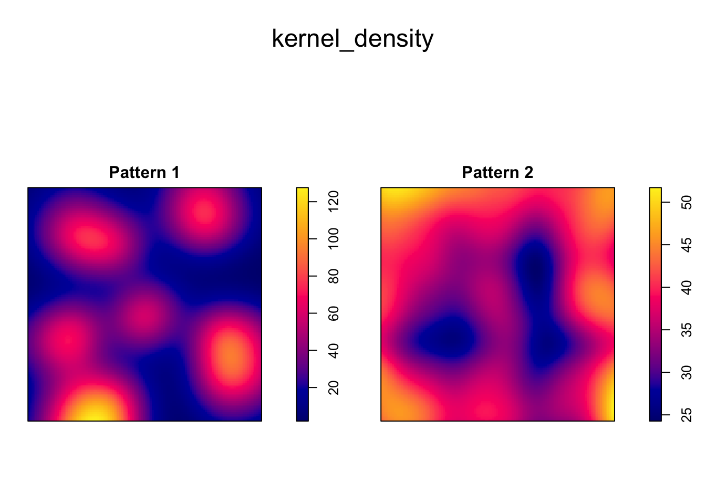
An empty space map is obtained by means of the distmap() function:
# The "distmap()" function computes the distance map of point pattern X and returns the distance map as a pixel image
empty_space_map1 <- distmap(pp1.ppp) The plot of this is:
plot(empty_space_map1)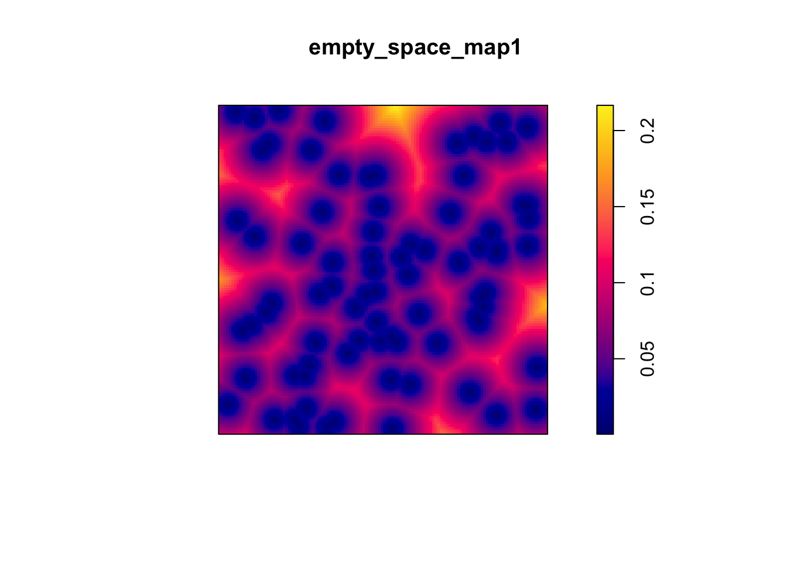
Similar to the Stienen diagrams that you used previously, this map shows the distance from any location on the map to the nearest event: the smaller the value, the closer the point is to an event. It is evident in this pixel image that the values are mostly smaller, illustrating that points are closer to events.
Compare the map above to pp2.ppp:
empty_space_map2 <- distmap(pp2.ppp)
plot(empty_space_map2)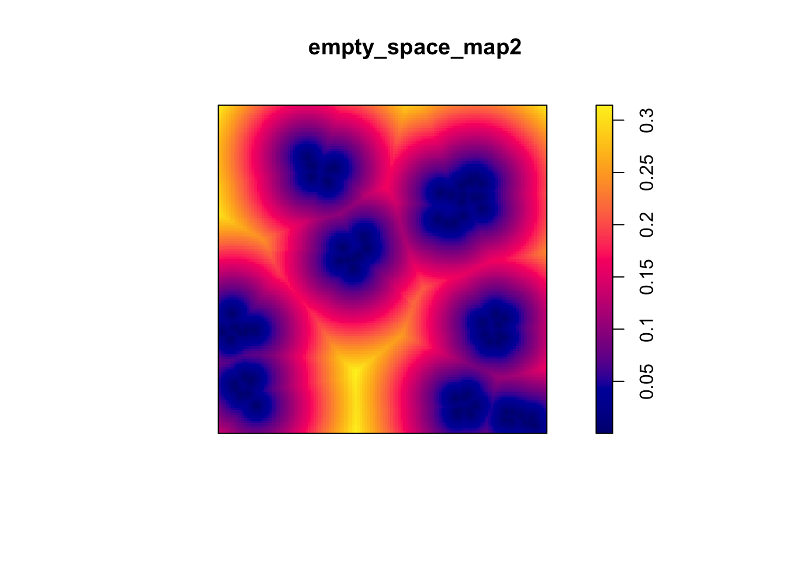
In the second point pattern, there is more open space in the region. This is also apparent from the symbols map:
plot(pp2.ppp)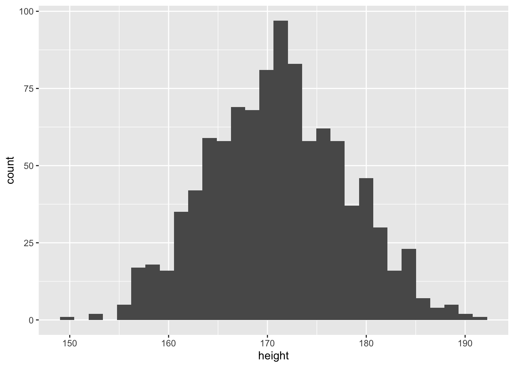
The \(\hat{F}\)-function is implemented in spatstat as Fest() (for F-estimated), and it requires a ppp object as an input. Another possible input is whether a correction is to be used. This refers to boundary corrections. Since we have not yet discussed them, select “none”:
# The "Fest()" function computes an estimate of the empty space function, and it also called the "point to nearest event" distribution. This function estimates the nearest neighbors of a point (in this example, for pp1)
f_pattern1 <- Fest(pp1.ppp, correction = "none")This function can be plotted as follows:
plot(f_pattern1)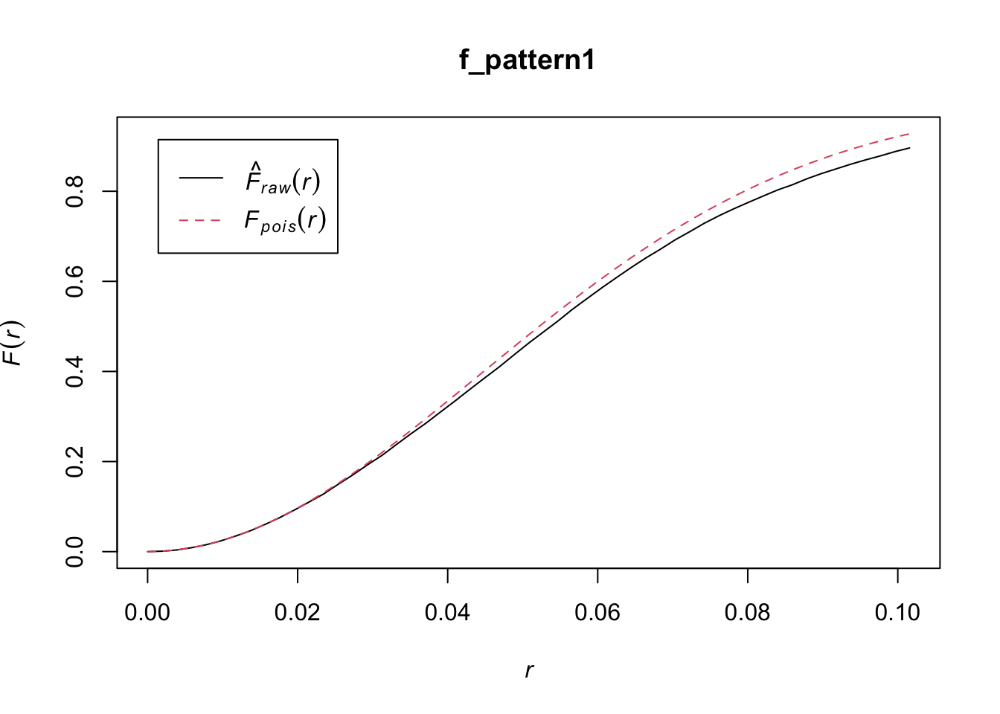
The black line is the empirical function, and we see that it is in general very similar to the theoretical function that corresponds to a null landscape. Compare to the second pattern:
f_pattern2 <- Fest(pp2.ppp, correction = "none")
plot(f_pattern2)
lines(x = c(0, 0.097), y = c(0.4, 0.4), col = "blue", lty = "dotted")
lines(x = c(0.045, 0.045), y = c(0.0, 0.4), col = "blue", lty = "dotted")
lines(x = c(0.097, 0.097), y = c(0.0, 0.4), col = "blue", lty = "dotted")In the empirical (black) pattern, points on a grid tend to be more distant from events than what you would expect from the null landscape. For example, whereas under the theoretical function 40% of points have a nearest event that is at a distance of approximately 0.045 or less, under the empirical function, the events are generally more distant from the points, and for the same value of F (0.4 or 40%) the distance is closer to 0.1. See:
# Repeat the plot of the F-function of `pp2.ppp` and use the function `lines()` to add lines to compare the distances for a given value of F, say 0.4 (or 40%)
plot(f_pattern2)
lines(x = c(0, 0.097), y = c(0.4, 0.4), col = "blue", lty = "dotted")
lines(x = c(0.045, 0.045), y = c(0.0, 0.4), col = "blue", lty = "dotted")
lines(x = c(0.097, 0.097), y = c(0.0, 0.4), col = "blue", lty = "dotted")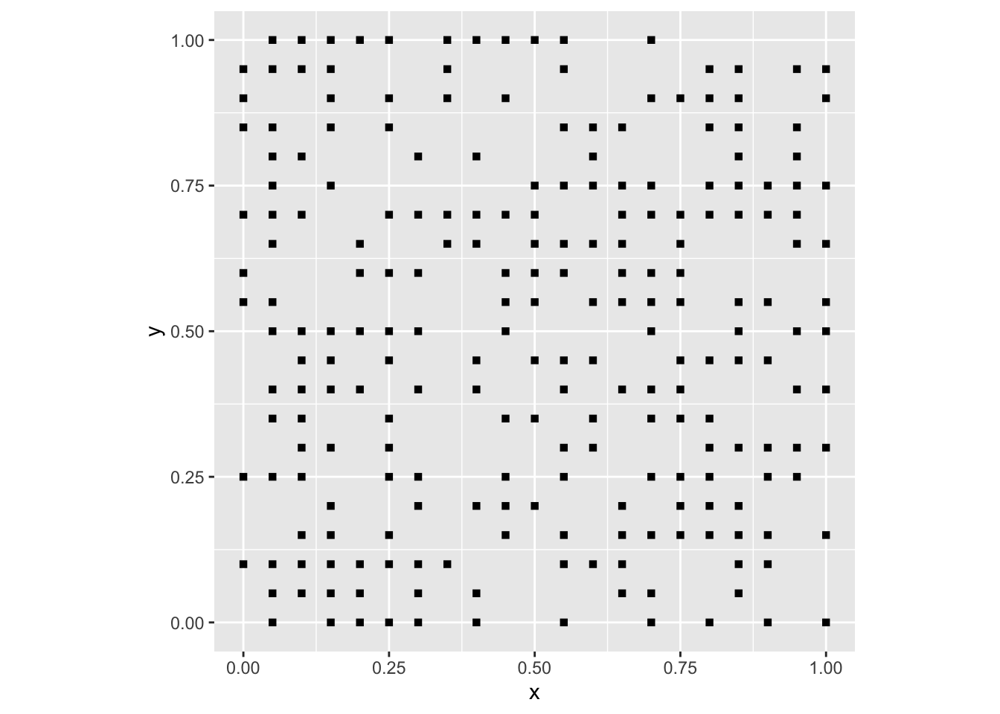
This suggests that the points are clustered. Try plotting the \(\hat{G}\)-functions for the patterns in this example, and compare.
15.6 \(\hat{K}\)-function
A limitation of the two techniques that we have seen so far is that they deal with a single scale: the distance to the first nearest neighbor (or, more generally, to the \(k\)-th nearest neighbor; these functions can be used for the 2nd, 3rd, and so on nearest neighbor!). Their single scale nature means that these functions can easily miss patterns when they are only evident at different scales.
Consider for instance the following point pattern:
plot(pp3.ppp)
The events above initially appear to be clustered. However, at a different scale, a second pattern becomes evident. In fact, what we observe is a regular distribution of clusters. At a smaller scale, a single cluster may actually be a random distribution of events. In contrast, the following pattern appears to be a random distribution of regularly spaced events:
plot(pp4.ppp)
Whereas the last point pattern is of clusters of dispersed events that are themselves regularly spaced:
plot(pp5.ppp)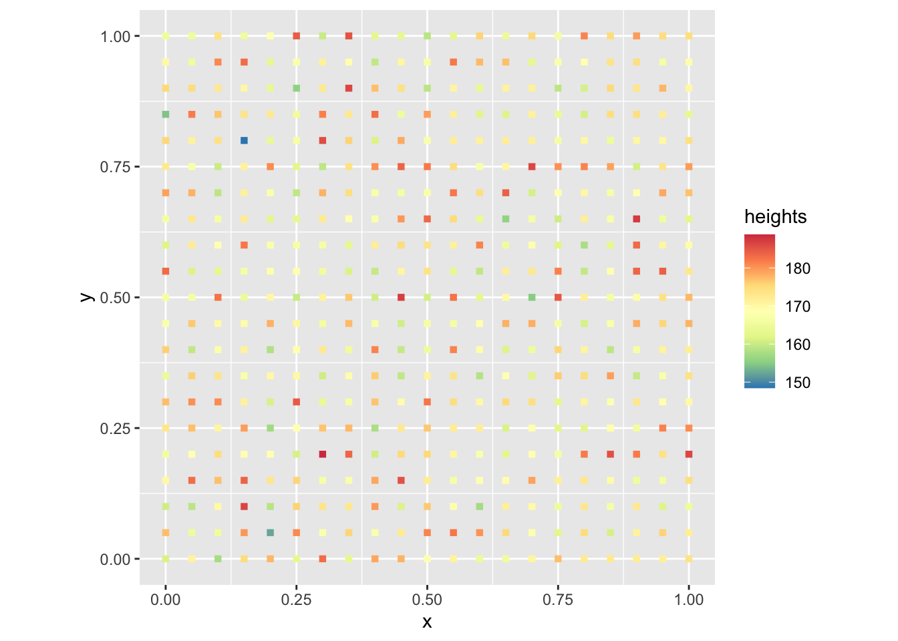
Both \(\hat{G}(x)\) or \(\hat{F}(x)\) when applied to any of these patterns will strongly hint at clustering at the scale of the first nearest neighbor. Regrettably, they fail to detect patterns that might exist at other scales. For instance:
f_pattern3 <- Fest(pp3.ppp, correction = "none")
plot(f_pattern3)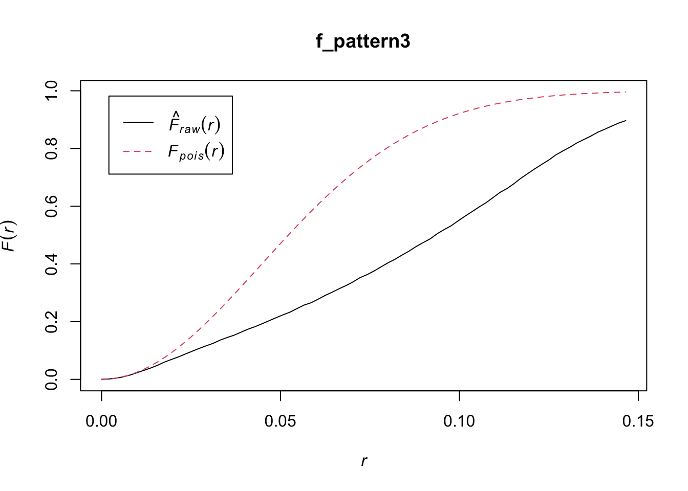
g_pattern3 <- Gest(pp3.ppp, correction = "none")
plot(g_pattern3)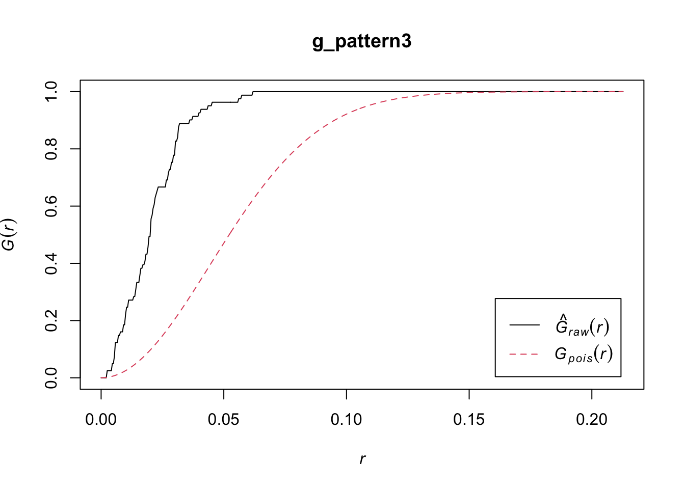
A different technique, called the \(\hat{K}\)-function, is designed to detect patterns at multiple scales (see Ripley 1976; and Haase 1995). The intuition behind the function is as follows.
Imagine that you visit every on of the events in the point patter in sequence. Each time you visit an event you do the following: first, you create a circle with radius “x” centered on the event, and then you count the number of events that are within the circle. Then you increase “x” by some distance, and repeat the process. Once that you have created the last circle (which will be suitably large to capture patterns at that scale), you move and visit the next event in the pattern and repeat the exact same process. These counts of events at distances “x” are aggregated and normalized by the estimated intensity of the point pattern.
More formally, this is (with \(A\) as the area of the region): \[ \hat{K}(x)=\frac{1}{\hat{\lambda}A}\sum_{i}\sum_{j\neq i}(d_{ij}\le x). \]
As before, the theoretical values for this function are known for the case of a null landscape generated by a Poisson process: \[ K_{pois}(x)=\pi x^2. \] When the empirical function is greater than the theoretical function, this would suggest that events are typically surrounded by more events at that distance than what the null landscape would have. This is interpreted as evidence of clustering.
In contrast, when the empirical function is less than the theoretical one, this would suggest that events are typically surrounded by fewer events at that distance than what would be expected from a null landscape. This is interpreted as dispersion.
The \(\hat{K}\)-function is implemented in the package spatstat as Kest().
To see how this function works, plot pp3.ppp once more:
plot(pp3.ppp)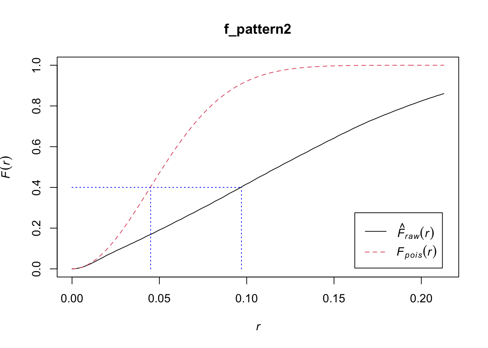
Next, use Kest() to calculate and plot the \(\hat{K}\)-function:
# `Kest()` function estimates nearest neighbors of a point on multiple scales, identifying more than just the distance to the first nearest neighbor. Here, we are applying the K-function to `pp3.ppp`. As before, ignore the correction; we will discuss this later
k_pattern3 <- Kest(pp3.ppp, correction = "none")
plot(k_pattern3)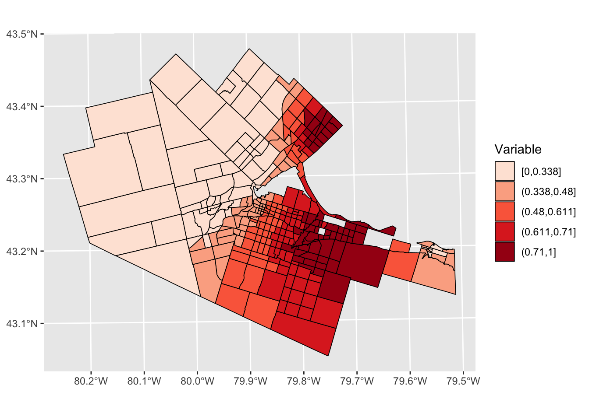
As seen from the plot, the function is suggestive of clustering at smaller scales, but regularity at a larger scale.
Try this now with the last pattern:
plot(pp5.ppp)
If you calculate and plot the \(\hat{K}\)-function:
k_pattern5 <- Kest(pp5.ppp, correction = "none")
plot(k_pattern5)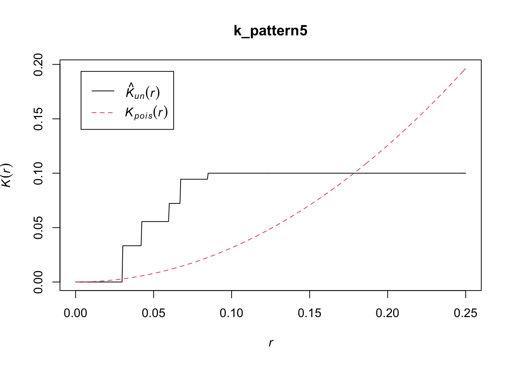
You will see that the plot correctly suggests dispersion at the very small scale, followed by clustering at an intermediate scale. There are indeed clusters of nine events surrounded by empty space, before other clusters of regular events are detected at the largest scale, following a regular pattern.
Of the distance-based techniques that you have seen so far, \(\hat{G}(x)\) and \(\hat{F}(x)\) are often used as complements. The \(\hat{K}(x)\) is useful when exploring multi-scale patterns.
This concludes the chapter, and our coverage of distance-based techniques.